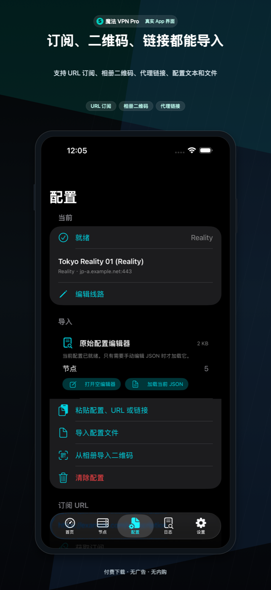
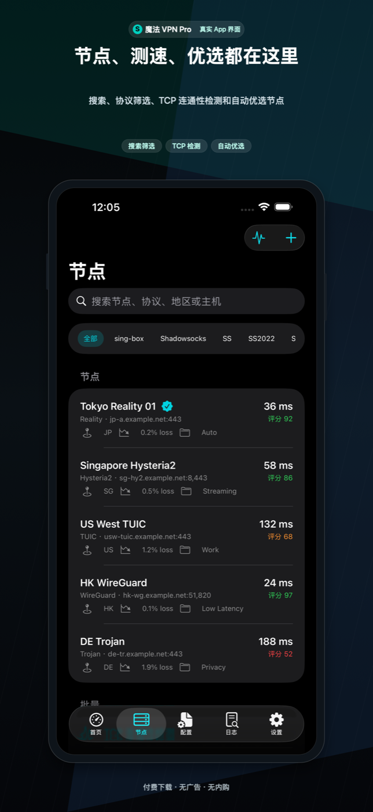
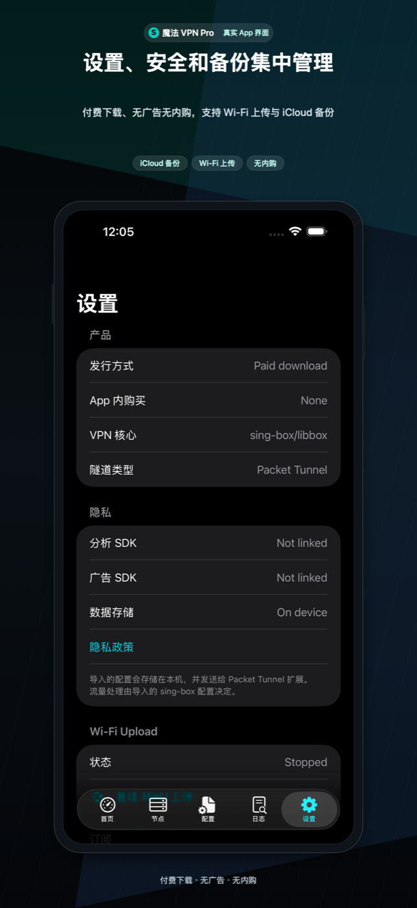
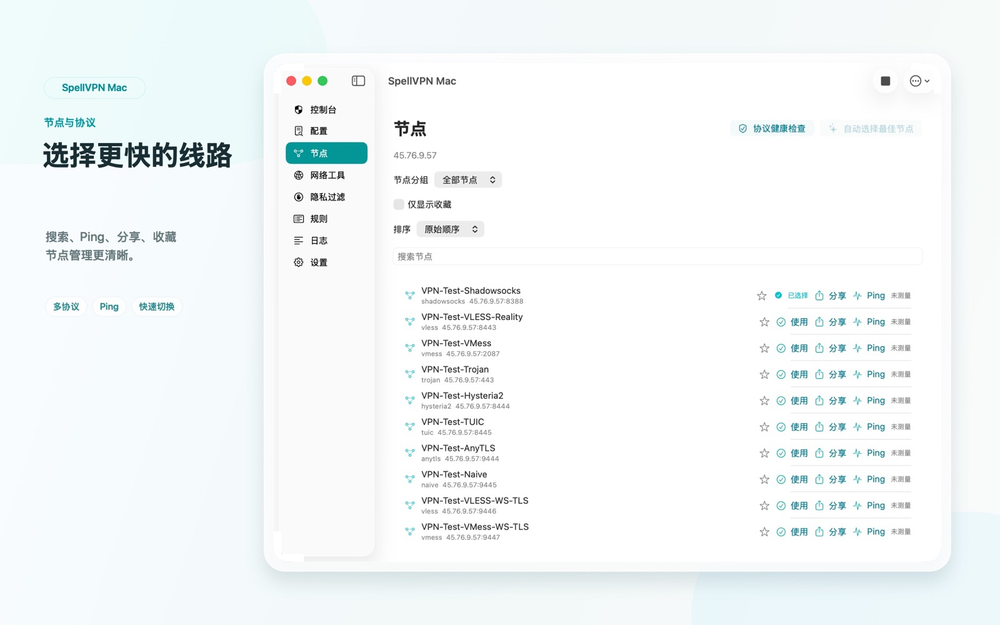
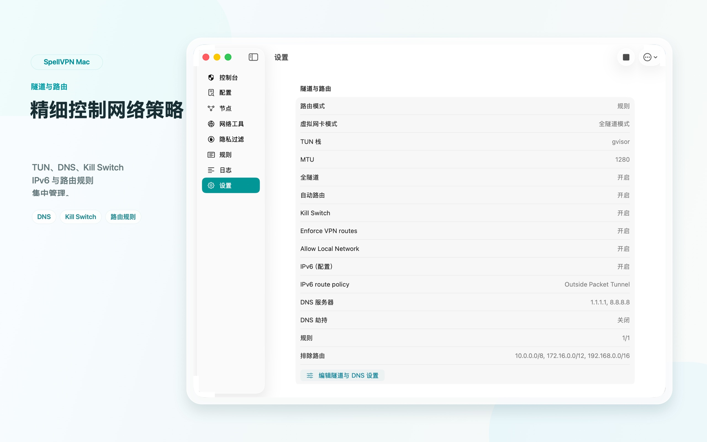
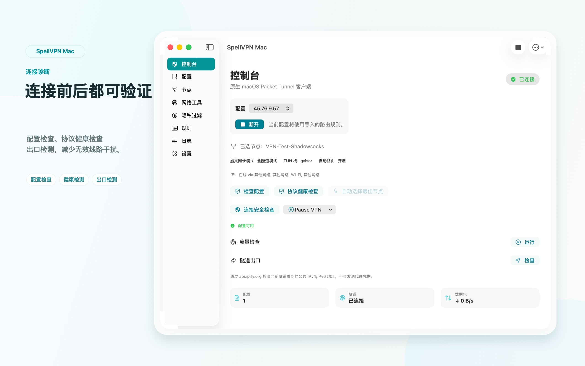

SpellVPN
iOS Ultra / 付费版 · Mac App Store · 原生 macOS Packet Tunnel
导入你自己的 sing-box JSON、Clash/Mihomo YAML、WireGuard 文本、订阅 URL、代理链接、二维码、剪贴板内容、本地文件、Wi-Fi 上传或远程配置 URL，然后在 iOS 或原生 macOS Packet Tunnel 中连接。

多种导入方式
支持扫码、照片二维码、剪贴板、文件、Wi-Fi 上传、订阅 URL、代理链接和 URL Scheme。可处理 sing-box JSON、Clash/Mihomo YAML、Base64 URI 列表、SIP008、Surge、Quantumult、Shadowrocket 风格文本和常见代理链接。
节点与订阅管理
管理已保存订阅 URL，支持更新、复制、删除；可选择节点、编辑真实代理 outbound、单节点 JSON 导出并显示节点二维码。
配置档、工具与小组件
可使用连接配置档、VPN 暂停、隐私过滤、DNS 管理、TCP Ping、DNS 查询、IP 查询、Whois、GeoIP、TLS、HTTP、TCP/UDP、IPv6 和测速等网络工具，Home/Lock Screen Widget、基础 App Shortcuts、本地日志、诊断报告、JSON 导入导出和 iCloud Drive App 数据备份。
Ultra、iOS 付费版与 Mac 付费版
Ultra 免费下载，接入 Yandex/AdMob 广告；自动续期订阅可去广告并解锁 Ultra 权益。付费 App Store 条目 https://apps.apple.com/app/id6788655739 同时覆盖 iOS 付费版和 Mac 付费版。macOS 构建是独立原生 macOS target，没有广告 SDK、分析 SDK、StoreKit 商品、订阅或内置 VPN 账号。
macOS App Store 版
Mac 付费版已经在 Mac App Store 上架，和 iOS 付费版使用同一个付费 App Store 条目：https://apps.apple.com/app/id6788655739。它是原生 macOS 客户端，带独立 Packet Tunnel Provider，可导入 sing-box JSON、Clash/Mihomo YAML、常见代理链接、SIP008 Shadowsocks JSON、WireGuard 文本、二维码、剪贴板、文件和远程配置 URL；支持配置档、节点分组、收藏、来源更新、规则、本地隐私过滤、Relay / MultiHop、诊断、加密备份和菜单栏连接/断开。macOS target 没有广告 SDK、分析 SDK、StoreKit 商品、订阅、provider-lines 服务或内置 VPN 账号。
宣传短视频
快速了解 SpellVPN 的导入方式、节点管理、连接流程，以及原生 Mac 版本体验。
截图
当前 Mac App Store 展示图已同步为 macOS 送审包中的桌面仪表盘、节点管理、路由、配置和安全/隐私工具页面。








重要边界
SpellVPN 不销售代理节点，也不托管用户流量。iOS 版本和 Mac 电脑版本都需要用户提供自己有权使用的配置和服务器。macOS 版使用独立 Packet Tunnel Provider、独立 Bundle ID/App Group 和 Network Extension entitlement；它不包含 iOS Ultra 的广告 SDK、订阅或 StoreKit 商品。当前构建不宣传 MITM、Rewrite 脚本、原生 OpenVPN 或 IKEv2 配置导入。